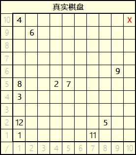
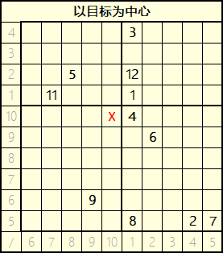

由于本网站是公开的，为保护隐私，涉及到的所有真实姓名均使用首字母代替。
第 10 届选举
计划 2023.4.3 | LYL -> ?
计划流程
与第 4 届选举相同，但网格大小为 8 * 8.
第 9 届选举
2023.3.30 | TXJ -> LYL
计划流程
与第 4 届选举相同，但网格大小为 10 * 10.
数据公开
TJW 给出坐标: 7 1
TXJ 给出坐标: 3 9
因为 LYL 缺席，所以提前决定给出的数字。主要: 1 10 备用: 2 8
 X: 7+3=10; Y: 1+9=10. 目标坐标为 10 10, LYL 距离最近 (1), 成功竞选。
由于 2023 春季期第 8 周正好遇上一模，且 TJW 任职期间一般都会有不好的事发生，议会决定将第 8 届选举提前至 2023.3.20, 选出的舍长立即上任。TJW 的任期则延迟至 2023.3.27 22:00 ~ 2023.4.2 8:10.
第 8 届选举
2023.3.20 | TJW -> TXJ
计划流程
从 1 ~ 11, 成员依次选择一个数字。
由 ZCY 和 TJW 从 11 张卡牌里各随意抽取一张不重复的卡牌，将卡牌上的数字相加，选择相加后得到的和的数字的成员成功竞选。
数据公开
因为 LYL 缺席，由其指定的全权代理人 TJW 进行代理。
1: SLJ
2: QKY
3: LGY
4: LYL
5: XZY
6: ZH
7: HXM
8: ZCY
9: TXJ
10: TGL
11: YBH
ZCY 选择的卡牌的数字为: 8
TJW 选择的卡牌的数字为: 1
8+1=9. 选择数字 9 的成员为 TXJ, 成功竞选。
你知道吗? 第 4 ~ 7 届竞选成功成员为: ZCY -> TJW -> ZCY -> TJW.
第 7 届选举
2023.3.16 | ZCY -> TJW
计划流程
与第 4 届选举相同。
数据公开
TJW 给出坐标: 7 11
ZCY 给出坐标: 1 19
因为 LYL 缺席，所以提前决定给出的数字。主要: 8 16 备用: 2 20
SLJ 给出坐标: 1 1
ZH 给出坐标: 11 4
QKY 给出坐标: 19 1
LYL 给出坐标: 8 16
XZY 给出坐标: 5 18
TGL 给出坐标: 3 14
HXM 给出坐标: 13 13
YBH 给出坐标: 3 5
LGY 给出坐标: 18 18
TXJ 给出坐标: 4 5
TJW 给出坐标: 7 7
X: 7+1=8; Y: 11+19=30, 溢出处理，30-20=10. 目标坐标为 8 10, TJW 距离最近 (4), 成功竞选。
第 6 届选举
2023.3.9 | TJW -> ZCY
计划流程
由 ZCY, TJW 两人分别重新排列 1 ~ 10 的数字并给出一个 1 ~ 100 的随机数，其中 TJW 再额外给出一条数列专门给 ZCY 使用。
11 名成员轮流重新排列 1 ~ 10 的数字并给出一个 1 ~ 100 的随机数，除 ZCY 外的 10 名竞选成员分别与 ZCY, TJW 在最开始给出的数列比对，猜中数字最多的成员成功竞选。ZCY 则与 TJW 给出的两条数列比对。
若出现平局则比较 1 ~ 100 的随机数。与第 1 届选举一样，距离计算采用回环机制。
数据公开
ZCY 给出数字: 7 9 4 1 3 5 2 8 6 10 | 92
TJW 给出数字: (A) 7 3 1 4 5 6 9 2 10 8 | (B) 1 10 9 2 3 8 7 4 5 6 | 77
| 成员 | 1 | 2 | 3 | 4 | 5 | 6 | 7 | 8 | 9 | 10 | 随机数 |
|---|---|---|---|---|---|---|---|---|---|---|---|
| SLJ | 9 | 3 | 1 | 8 | 2 | 4 | 10 | 6 | 5 | 7 | 1 |
| ZH | 6 | 9 | 1 | 2 | 3 | 4 | 5 | 7 | 8 | 10 | 6 |
| QKY | 4 | 2 | 3 | 5 | 6 | 1 | 10 | 8 | 9 | 7 | 11 |
| LYL | 7 | 5 | 4 | 3 | 2 | 1 | 9 | 10 | 8 | 6 | 69 |
| XZY | 6 | 3 | 8 | 10 | 9 | 1 | 4 | 5 | 3 | 7 | 12 |
| TGL | 1 | 4 | 7 | 2 | 5 | 8 | 3 | 6 | 9 | 10 | 47 |
| HXM | 10 | 9 | 8 | 7 | 6 | 5 | 4 | 3 | 2 | 1 | 71 |
| YBH | 5 | 1 | 3 | 2 | 4 | 7 | 8 | 9 | 6 | 10 | 13 |
| LGY | 2 | 5 | 3 | 7 | 6 | 8 | 9 | 10 | 1 | 4 | 88 |
| TXJ | 5 | 9 | 7 | 6 | 10 | 1 | 2 | 4 | 8 | 3 | 81 |
| ZCY | 1 | 2 | 3 | 4 | 5 | 6 | 7 | 8 | 9 | 10 | 64 |
ZCY 猜中数字最多，成功竞选。
你知道吗? QKY 已经连续四届选举大难不死。第 2 届与 LGY 抢偏小没抢过落选，第 3 届最终数字最大，第 4 届 ZCY 为他拦住了前往舍长的道路，第 5 届总决赛被淘汰。
第 5 届选举
2023.3.2 | ZCY -> TJW
计划流程
由 ZH, ZCY 两人共同给出 ID 分别为: ① (2个, 1~4), ②A 和 ②B (共2个, 1~4), ③ (1个, 1~3), ①+A (1个, 1~3), ③+B (1个, 1~2), G (1个, 1~2) 的数字，然后分别相加。如同一个 ID 的两个数字重复，则其中一个 +2. 若 ②A 与 ②B 相同，则 ②B +2.
使用 第 5 届选举分组器 对 11 个成员进行分组。前 4 个数字编入第①组，中间 4 个数字编入第②组，最后 3 个数字编入第③组。
第①②组的成员分别给出 1 ~ 4 的数字，第③组的成员给出 1 ~ 3 的数字，每个组内不能出现重复的数字。根据 ZH 给出的随机数判断，选中对应数字的成员晋级半决赛。
其中，第②组中猜中数字 ②A 的成员与第①组的晋级成员编入 ①+A 组，猜中数字 ②B 的成员与第③组的晋级成员编入 ③+B 组。这两组成员再次进行随机数选择，选中对应数字的成员晋级总决赛。
再次进行随机数选择，猜中数字 G 的成员成功竞选。
数据公开
| ZH | ZCY | 选举种子 | |
|---|---|---|---|
| ① | 1,1 | 2,1 | 3,2 |
| ②A | 4 | 4 | 4 |
| ②B | 2 | 3 | 1 |
| ③ | 1 | 2 | 3 |
| ①+A | 3 | 2 | 2 |
| ③+B | 2 | 1 | 1 |
| G | 1 | 2 | 1 |
LYL 缺席，根据本次规则不做任何处理。
分组情况: ① ZH SLJ TGL QKY; ② YBH TJW LGY XZY; ③ HXM TXJ LYL
初赛 - 第①组: 1: ZH; 2: QKY; 3: SLJ; 4: TGL
选举种子为 3,2, SLJ 与 QKY 晋级半决赛。
第②组: 1: TJW; 2: XZY; 3: YBH; 4: LGY
②A = 4, LGY 进入 ①+A 组; ②B = 1, TJW 进入 ③+B 组。
第③组: 1: HXM; 2: TXJ; 3: LYL
选举种子为 3, LYL 晋级半决赛。
半决赛 - ①+A 组: 1: LGY; 2: QKY; 3: SLJ
选举种子为 2, QKY 晋级总决赛。
③+B 组: 1: TJW; 2: LYL
选举种子为 1, TJW 晋级总决赛。
总决赛 - G 组: 1: TJW; 2: QKY
选举种子为 1, TJW 成功竞选。
第 4 届选举
2023.2.22 | ZH -> ZCY
计划流程
由 LGY 和 ZH 分别给出 2 个 1 ~ 20 的不重复数字，将两人的第一个数字相加得到目标的 X 坐标，第二个相加得到 Y 坐标。
有第一象限的 20 * 20 的网格，目标根据上述规则随机落在一个格子处。
11 位宿舍成员轮流给出一个 X,Y 坐标，落在网格上。不能有重复。
最靠近目标的成员成功竞选。如有多个成员距离一样远，周围同样距离内其他人多的成功竞选。
与第 1 届选举一样，距离计算采用回环机制。
数据公开
LGY 给出坐标: 1 20
ZH 给出坐标: 1 14
因为 LYL 缺席，所以提前决定给出的数字。主要: 6 18 备用: 13 2
SLJ 给出坐标: 6 6
QKY 给出坐标: 2 12
LYL 给出坐标: 6 18
XZY 给出坐标: 8 4
TGL 给出坐标: 6 7
HXM 给出坐标: 13 13
YBH 给出坐标: 5 12
LGY 给出坐标: 18 18
TXJ 给出坐标: 1 10
TJW 给出坐标: 13 13
ZCY 给出坐标: 2 13
X: 1+1=2; Y: 20+14=34, 溢出处理，34-20=14. 目标坐标为 2 14, ZCY 距离最近 (1), 成功竞选。
第 3 届选举
2023.2.15 | LGY -> ZH
计划流程
由 TGL 和 LGY 分别重新排列 1 ~ 12 的数字，得到两个数列。
TGL 的数列决定数字顺序，LGY 的数列决定成员的未知数 (以下简称 "?"). 这两个数列在结算阶段前均不公开。
例如，TGL 给出的第一个数字是 2，LGY 是 4，那么意思就是第②位的成员 (ZH) 的未知数是 4.
根据这个规则，所有 12 名成员都被分配到了一个未知数。
一共有 10 张写有 1 ~ 10 的卡片，稍后会使用。
选举环节开始后，每个人轮流进行，先洗牌，然后决定 "抽第 (1 ~ 10) 张牌" 或 "结束". 每个人不能抽重复的牌且至少要抽一张牌。
目标是让自己的 "?" 与抽到的牌的数字之和尽量接近 21, 并且不要超过 21.
当自己的已知数字之和大于等于 20 时就不能继续抽牌。
所有人都结束后，公开每个人的 "?" 并计算每个人的最终数字。
若所有人的最终数字都是 21, 按下文平局处理。若所有人的数字都小于等于 21, 数字最小的成功竞选，如有多个人则按平局处理。若所有人的数字都大于等于 21 或只有一个人的数字大于 21, 数字最大的成功竞选，如有多个人则按平局处理。
若均不属于上述情况，选出数字最小且不等于 21 的 X 个人 (X 为数字小于 21 的人数的一半，向下取整) 和所有数字大于 21 的人，按平局处理。
平局处理: 将平局的多个人的最后抽到的一个数字进行比较，数字最小的成功竞选，如有多个人数字一样小则这些人比较倒数第二个抽到的数字，其他人淘汰，以此类推。
如果有至少一个人的除了 "?" 外的数字全部比较完仍平局，则忽略其他人尚未比较的数字，直接比较所有仍然平局的人的 "?" 的大小。
数据公开
| 人员 | ||||||||||||
|---|---|---|---|---|---|---|---|---|---|---|---|---|
| TGL | 5 | 4 | 7 | 1 | 3 | 2 | 6 | 9 | 10 | 12 | 11 | 8 |
| LGY | 10 | 6 | 7 | 11 | 12 | 1 | 2 | 5 | 8 | 3 | 9 | 4 |
因为 LYL 缺席，由其指定的全权代理人 XZY 进行代理。
| 人员 | 抽到数字 | 未知数 | 最终结果 |
|---|---|---|---|
| SLJ | 1+8 = 9 | 11 | 20 ↓ |
| ZH | 8+6 = 14 | 1 | 15 ↓ |
| QKY | 10+1+8 = 19 | 12 | 31 ↑ |
| LYL | 7+8 = 15 | 6 | 21 = |
| XZY | 7+8 = 15 | 10 | 25 ↑ |
| TGL | 4+2+9 = 15 | 2 | 17 ↓ |
| HXM | 10+4 = 14 | 7 | 21 = |
| YBH | 2+6+8 = 16 | 4 | 20 ↓ |
| TXJ | 2+7 = 9 | 8 | 17 ↓ |
| TJW | 7+3+9 = 19 | 9 | 28 ↑ |
| ZCY | 3+7+9 = 19 | 3 | 22 ↑ |
数字小于 21 的有 5 人，一半向下取整，为 2 人，即抽取数字为 15 和 17 的人员进入平局。
由于 TGL 和 TXJ 的数字都是 17, 按平局处理，7 (TXJ) < 9 (TGL), TXJ 晋级平局。
ZH, QKY, XZY, TXJ, TJW, ZCY 进入平局。6 (ZH) < 7 (TXJ) < 8 (QKY, XZY) < 9 (TJW, ZCY), ZH 成功竞选。
第 2 届选举
2023.2.9 | TGL -> LGY
计划流程
由 LYL 和 TGL 分别给出 11 个不重复的随机数，其中前 10 个范围为 1 ~ 100, 最后一个范围为 1 ~ 99.
将一共 22 个数字分别相加，得到开奖数字 (每一轮结束后才计算).
初赛: 每一个床 (上下铺) 为一组，一共有 6 组。
每组中经过讨论，有一个人猜数字小 (1 ~ 50), 另一个人猜数字大 (51 ~ 100).
例如，第①组中，SLJ 猜大，ZH 猜小。若数字为 60 (大), SLJ 晋级半决赛。
由于舍长不连任, TGL 不参与本次选举，因此 XZY 可以自由给出 大/小 的选择。
若 XZY 猜对: 一共有 6 个人晋级半决赛。第①②组的胜利者归入第⑦组，第③⑥组的胜利者归入第⑧组 (距离比较近), 第④⑤组的胜利者归入第⑨组。
重复初赛规则，晋级总决赛的一共有 3 个人。分别给出 大 (67 ~ 99), 中 (34 ~ 66), 小 (1 ~ 33) 的猜测。猜中者成功竞选。
若 XZY 猜错: 一共有 5 个人晋级决赛。分别给出 大 (81 ~ 100), 偏大 (61 ~ 80), 中 (41 ~ 60), 偏小 (21 ~ 40), 小 (1 ~ 20) 的猜测。猜中者成功竞选。
数据公开
LYL 给出随机数: 7 72 11 23 67 86 | 52 | 13 98 47 | 6
TGL 给出随机数: 54 78 66 42 84 72 | 88 | 41 24 18 | 7
因为 LYL 缺席，由 QKY 全权决定选择。
初赛 - 第①组: 大: SLJ / 小: ZH
7+54=61 (大), SLJ 晋级。
第②组: 大: LYL / 小: QKY
72+78=150, 溢出处理, 150-100=50 (小), QKY 晋级。
第③组: 大: - / 小: XZY
11+66=77 (大), 无人晋级。
第④组: 大: HXM / 小: YBH
23+42=65 (大), HXM 晋级。
第⑤组: 大: LGY / 小: TXJ
67+84=151, 溢出处理, 151-100=51 (大), LGY 晋级。
第⑥组: 大: ZCY / 小: TJW
86+72=158, 溢出处理, 158-100=58 (大), ZCY 晋级。
决赛 - 决赛组: 大: ZCY / 偏大: HXM / 中: SLJ / 偏小: LGY / 小: QKY
52+88=140, 溢出处理, 140-100=40 (偏小), LGY 成功竞选。
第 1 届选举
2023.2.3 | LYL -> TGL
计划流程
首先先由 LYL 给出一个 0 ~ 100 的随机整数 a，然后将其保密，除了 LYL 外将不会有人在公开前知道数字。
除了 LYL (不连任) 和 TXJ (本次不参与) 外的 10 位宿舍成员轮流给出 0 ~ 100 的不重复随机整数 (b1, b2, ... , b10)。
公开 LYL 选择的随机数，然后让 LYL 从 A ~ H 8 个保密的公式中选择一个 (选字母)，代入 a 进行计算，得到数字 c.
A. x+30
B. x-30
C. x^2/2
D. x^3/4
E. x^2-60
F. x^3-150
G. 2x+80
H. 3x-90
b1, b2, ... , b10 中，最靠近数字 c 的数字的给出者成功竞选。
由于 0 和 100 及其附近的数字比较难更靠近数字 c, 所以采用回环机制。例如，100 (数字 c) 更靠近 1, 而不是 2.
若数字 a 泄露没有大的影响，因为我们仍不知道 LYL 会选择哪一个公式。
若出现平局则平局的人员再次给出新的不重复随机整数，让 LYL 重新选择公式并计算。
数据公开
数字 a: 6
SLJ 给出数字: 17
ZH 给出数字: 6
QKY 给出数字: 2
XZY 给出数字: 82
TGL 给出数字: 41
HXM 给出数字: 77
YBH 给出数字: 13
LGY 给出数字: 85
TJW 给出数字: 1
ZCY 给出数字: 67
LYL 选择公式 H (3x-90) 计算结果为: -72, 溢出处理, 101-72=29
SLJ 给出的 17 和 TGL 给出的 41 距离 29 同样远。
SLJ 给出数字: 1
TGL 给出数字: 85
LYL 选择公式 E (x^2-60) 计算结果为: -24, 溢出处理, 101-24=77
TGL 给出的 85 距离 77 更近。TGL 成功竞选。